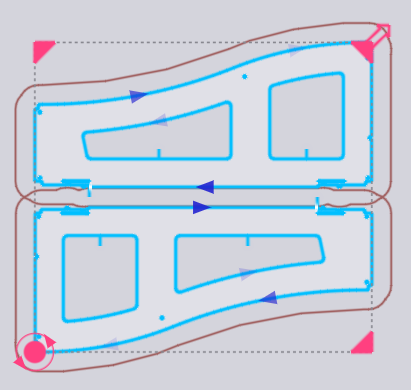

Placeringspanel
En del som har lagts till (eller någon befintlig del på layouten) kan flyttas, roteras eller upprepas med Placeringspanelen, som visas när du klickar på delen:

-
Inställningarna Left, Bottom, Right och Top är gränserna för delens begränsningsruta, och dessa kan användas för att placera delen exakt.
-
Du kan också bara klicka på det röda cirkulära handtaget i mitten av delen och börja dra det för att placera det på plåten. När du drar delen kommer TecZone Laser att lägga till snäppriktlinjer som hjälper dig att placera delen med ett exakt mellanrum (bryggbredd) till de intilliggande delarna. Medan delen placeras ritas också en kontur runt delen, förskjuten från den faktiska delkonturen med bryggbredden.
-
Inställningen Angle kan användas för att rotera delen så att andra orienteringar kan provas. När du drar delen med dess draghandtag kan du också hålla ned Ctrl-tangenten och rotera mushjulet för att rotera delen interaktivt.
-
Använd Ctrl+klicka för att göra en kopia av delen och börja sedan dra den kopian.
-
Använd Alt+klicka för att spegla delen vertikalt och Alt+Shift+klick för att spegla delen horisontellt.
-
Det finns flera väljare längst ner i panelen:
-
Klicka på Koppla om för att avmarkera de valda delarna och markera alla andra.
-
Klicka på Similar för att markera alla kopior av samma del i samma vinkel.
-
Klicka på Same Parts för att markera alla kopior av samma del (oavsett rotationsvinkel).
-
Klicka på Similar Parts in Row för att markera alla delar i samma vinkel och i samma horisontella position.
-
Klicka på Similar Parts in Column för att markera alla delar med samma vinkel och samma vertikala position.
-
TwinLine-placering (gemensam linje)
Om du använder Shift+klicka för att börja dra en del kommer placeringen att sättas i TwinLine-läge – när du drar två parallella kanter nära varandra kommer TecZone Laser att fästa dem ihop med exakt ett snittbreddsavstånd mellan dem, så att de båda kan skäras som en gemensam linje. Här är ett exempel på en sådan snäppning när vi drar en del med Shift+klick:

När musen släpps bildar de två delarna en enda TwinLine-grupp där den gemensamma linjen skärs endast en gång (du kan se att det bara finns en enda skärlinjepil vid den diagonala linjen i mitten).

Upprepa och gruppera delar

Du kan markera en del och sedan använda de fyra handtagen i hörnen på begränsningsrutan för att upprepa delen. Detta kan göras även med en grupp av markerade delar. Här är ett exempel där vi börjar med två intilliggande markerade delar och klickar på hörnhandtaget för att börja dra ut det:

När du har önskat antal rader och kolumner kan du klicka för att infoga de upprepade delarna:

Upprepa med TwinLine
Om du börjar med en enda del eller en TwinLine-enhet med flera delar kan du hålla ned Shift medan du drar ut hörnet för att göra en TwinLine-upprepning:

Gruppera
När du har valt flera delar kan du klicka på knappen Group för att gruppera dem som en enhet. Då kommer alla operationer som flytta, rotera, spegla och upprepa att fungera på denna Group. När en grupp är vald kan du klicka på Ungroup för att bryta upp denna gruppering och behandla dem som enskilda delar igen.
Redigera delverktyg
Knappen Edit Tooling i panelen Placering kan användas för att justera laserskärningsverktyget för en eller flera markerade delar direkt i layouten. Markera först en grupp liknande delar som du vill redigera verktyget för:

Alla andra delar är gråmarkerade, TecZone Laser zoomar in på de markerade delarna och du kan sedan redigera delens verktyg. I det här exemplet antar vi att vi vill lägga till en Scrap cutting-operation på ett av de cirkulära hålen för att skära upp det plåtskrotet:

Om du gör en redigering (som att lägga till skrotkapning) kan du se att redigeringen tillämpas på alla valda delar. Om du klickar någonstans utanför gruppen av delar som redigeras återställs hela layouten. Du kan se att de tre valda delarna har fått skrotkapningsverktyget tillagt.